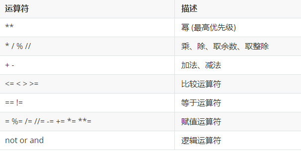
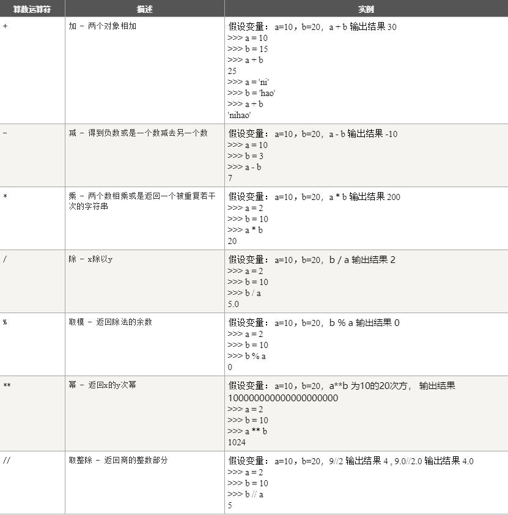
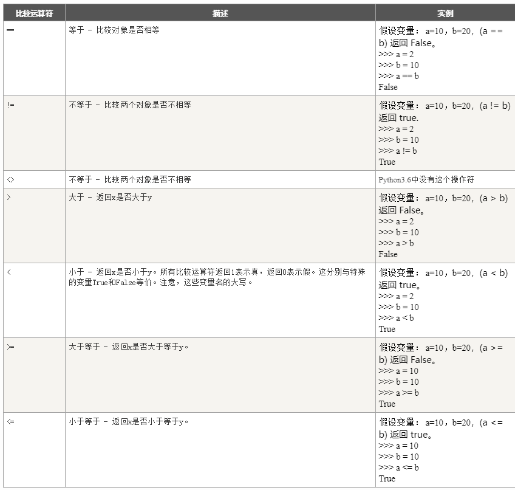
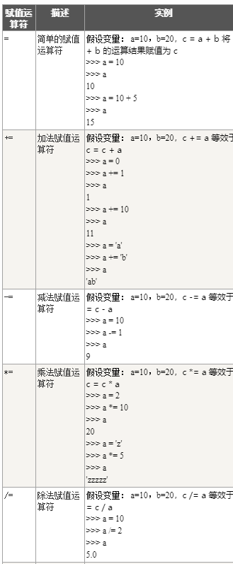
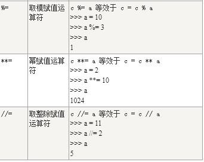
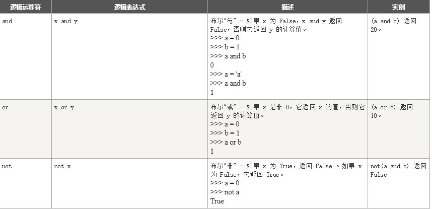
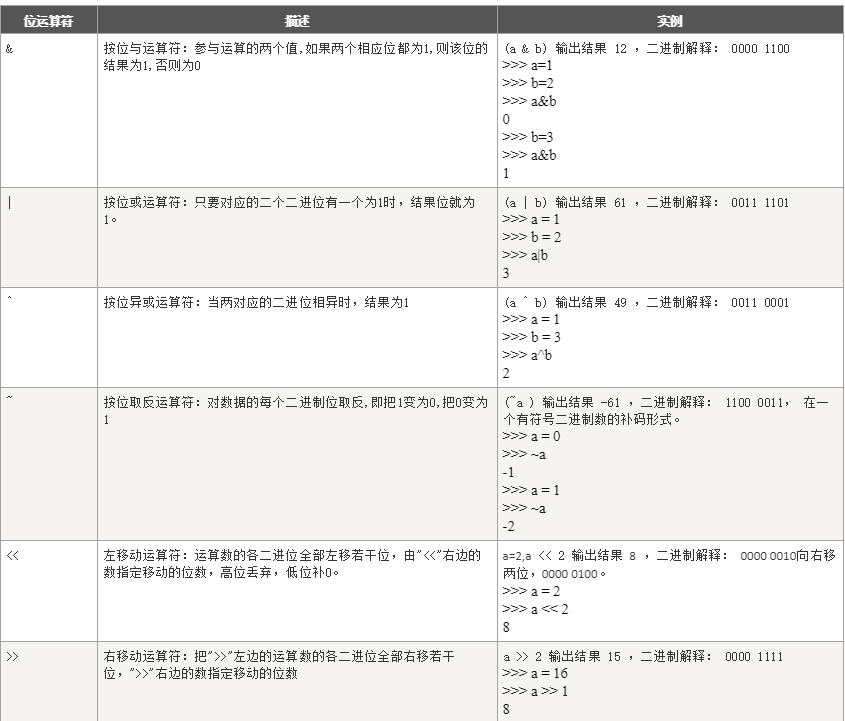

关于python运算符的详细讲解
运算符分为：
1.1：算术运算符
1.2：比较（关系)运算符
1.3 ：赋值运算符
1. 不同类型的对象进行比较，从来不会相等（不同的数字类型除外）；
2. 当把<、<=、> 和 >=操作符在这几种情况下会抛出TypeError异常: (1) 用于复数和另外的内置数字类型进行比较时；(2) 比较的对象为不同类型，无法进行比较时；(3) 未定义的其他情况下；
3. 一个类的不同实例通常是不相等的，除非该类定义了__eq__()方法；
4. 一个类的实例不能相对于同一类或其他类的的其他实例进行排序，除非该类定义了足够的方法__lt__(), __le__(), __gt__(), __ge__()。如果想要比较运算符的常规含义, __lt__()和__eq__()就足够了；
5. is 和 is not操作符的行为是不能自定义的；另外，它们可以被应用到两个不同类型的对象，不会已发异常。
6. 另外两个具有相同句法优先级的操作是 in 和 not in，它们支持序列、集合和映射类型的对象。
7.比较运算的结果为布尔值：True 或 False
1.4：逻辑运算符
1.5：位运算符
1.6：成员运算符
1.7：身份运算符
Python中运算符分为：
算数运算符的优先级

算数运算符

比较运算符

赋值运算符


逻辑运算符

位运算符

我的总结：
在python的运算符中重要的是记住算数运算符，比较运算符，逻辑运算符，赋值运算符这四大运算符要基本掌握；